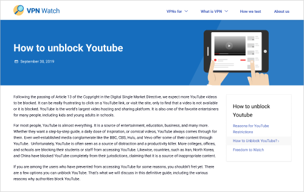
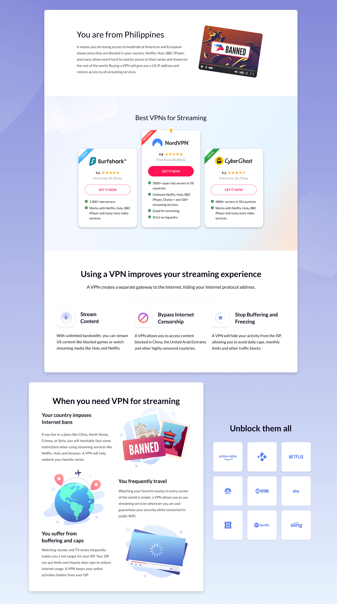
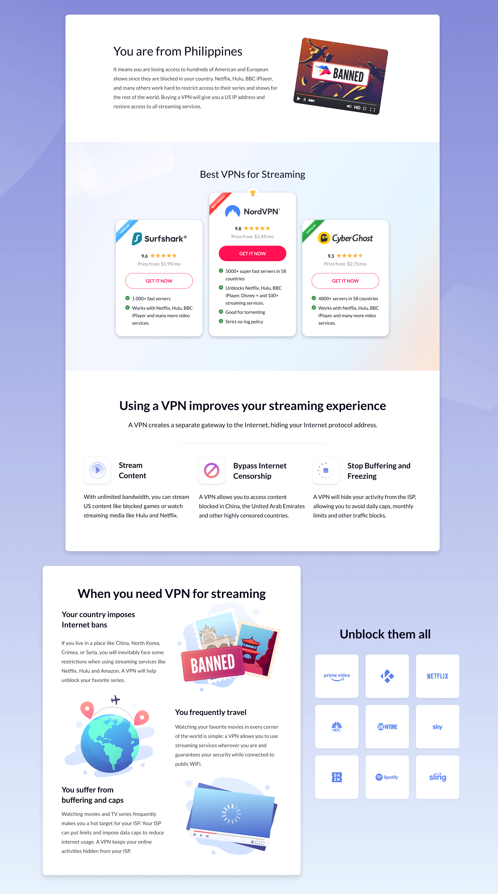
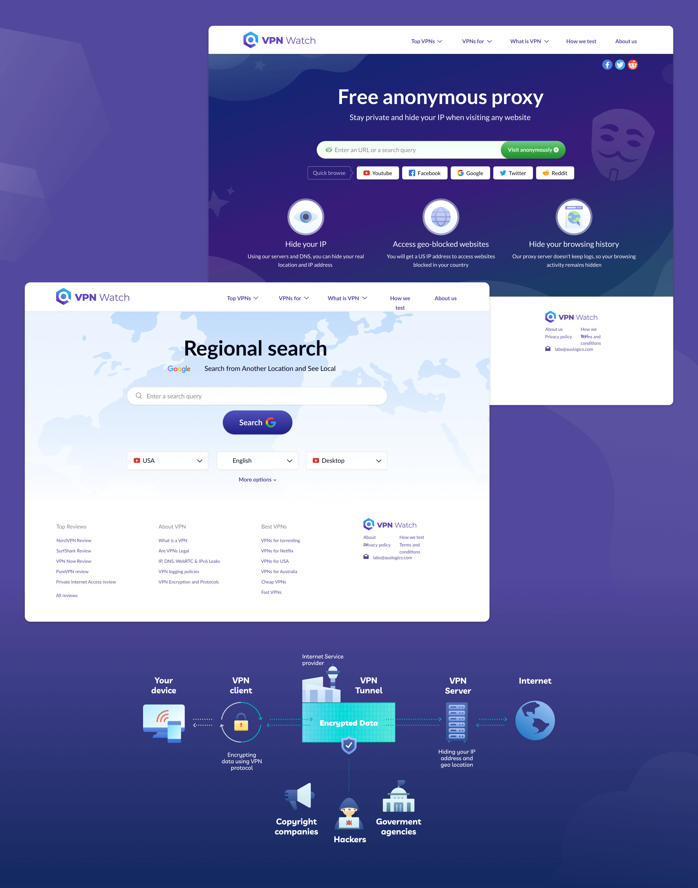
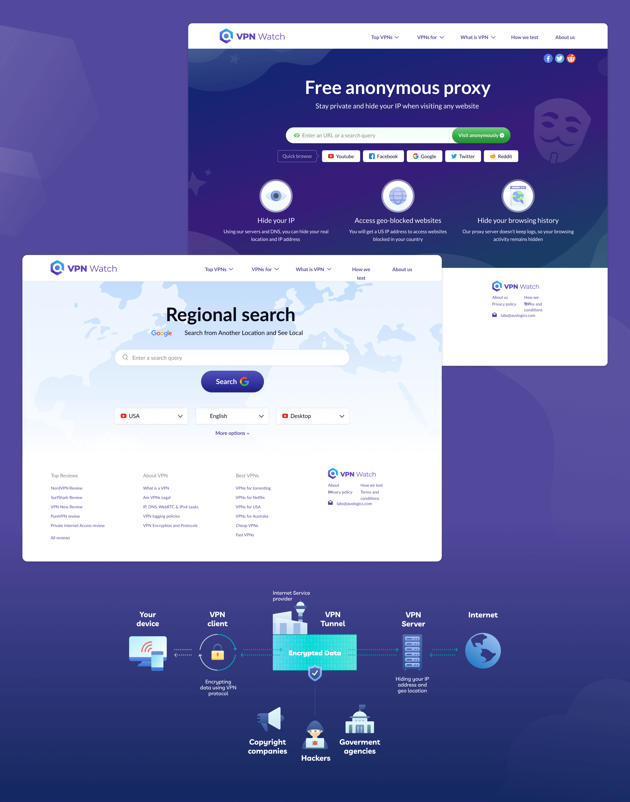

VPNWatch
Background
During brainstorming to promote the internal VPN product the idea was born that it is possible to make a separate, independent service with a rating and evaluation of VPN applications. The website should be focused on organic traffic, contain a lot of information on the use of VPN products.Team
The key staff of the project was small. A project manager, an analyst, a SEO consultant, a designer, a small development team, and outsourced copywriters.Running the MVP version
First, we decided to release the MVP version and not to spend a lot of resources on design, graphics and development. It was important to get key metrics, and it was necessary to release articles for the site indexing at once.Results
The site was well indexed, topics and articles were well chosen, but users quickly left the pages while reading. We ran several A/B tests on existing pages, which showed that pages with a lot of graphics and infographics better keep the user on the page, and the viewing depth increased.

Updating the site and launching version 2.0
- Design. We have updated the design, making it more modern, trying to keep the same HTML structure (primarily so as not to harm the indexed pages). This time we took a more comprehensive approach to design, prepared a palette, changed fonts, and created a design library. We also developed a brand and style for the project, making it more recognizable, as well as for promotion in social networks. This style has become end-to-end throughout the project, mini-services and graphics.
- Content. We have added a large number of graphics and infographics to existing articles. Created a rating of VPN applications and functionality for comparing them. We also made a large number of one-page mini-services (often entertaining), which is discussed below.
To increase the popularity of the site, we came up with and launched different formats and creatives
Every idea of this or that creative was brainstormed, including with my participation.-
Information Services
VPN service statistics over time, comparison tables of VPN clients. -
LPs with selections
The best VPN services for streaming; landing pages made for a specific country, etc. -
Useful mini-services
Search through proxy, regional search, site security check. -
Entertainment Pages
Checking password security, various articles with infographics.
 

The project was essentially a startup with an appropriate atmosphere: very diverse tasks, lots of communication and active brainstorming.
The pool of design activities was wide: working with a brand, a website and web pages, seo articles, analyzing analytical data in Google Stats, preparing a large number of graphics and infographics, creating various mini-services (each service worked according to its own mechanics), LPs preparation.
I can probably mark this project as one of the most memorable, including due to various activities and deep involvement.


 
